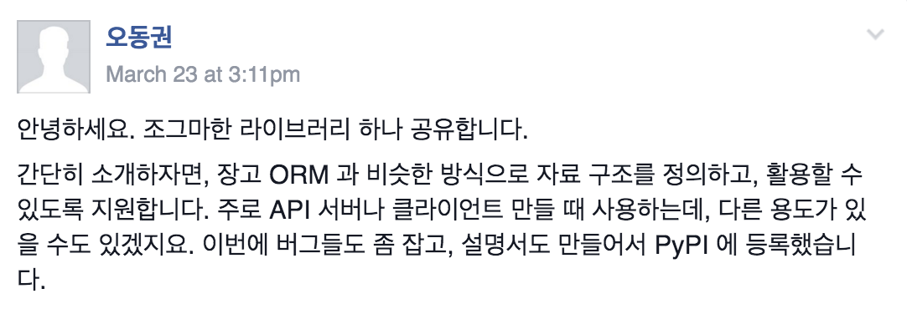

한국에서 일어나는 파이썬 관련 소식을 전합니다.
라이브러리
Meta(자료 구조 정의용 라이브러리)
flowdas의 오동권 님께서 자료 구조 정의용 라이브러리를 공개해주었습니다.

발표
Test First! by ahastudio
Test 코드를 통해 소프트웨어 명세를 실행 가능한 형태로 관리하는 방법을 ahastudio님이 이모콘에서 발표하였습니다. (아래는 소개글)
소프트웨어의 검증 방법을 미리 준비하는 접근 방식인 Test First를 소개합니다. 소프트웨어 명세로 작성한 문서는 지속성을 유지하기 어려워서 살아있는 문서화(living document)에 대한 중요성이 이전보다 더욱 강조되고 있습니다. 요구 명세를 실행 가능한 형태, 즉 테스트 케이스로 만들면 빠른 피드백을 받을 수 있어 모두 만족할 수 있는 코드를 작성할 수 있게 됩니다. Test First, 어떻게 작성해야 하는지 예제와 함께 살펴봅니다.